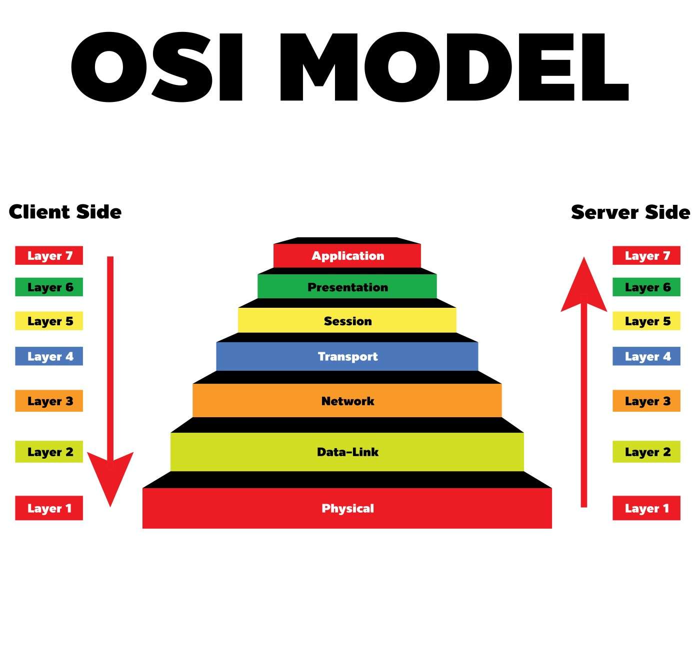
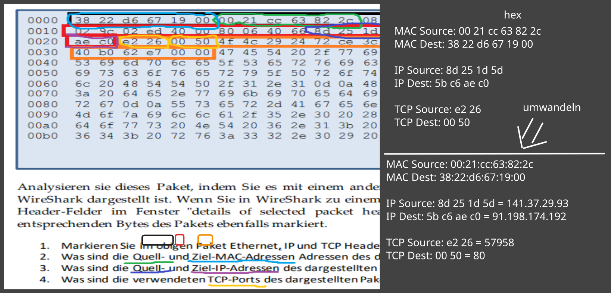
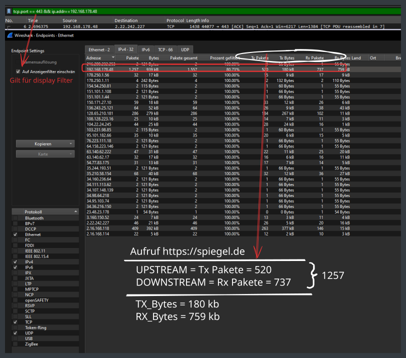
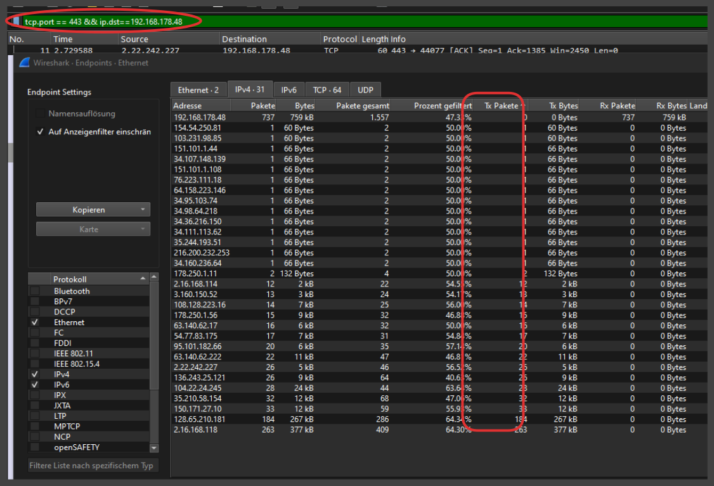
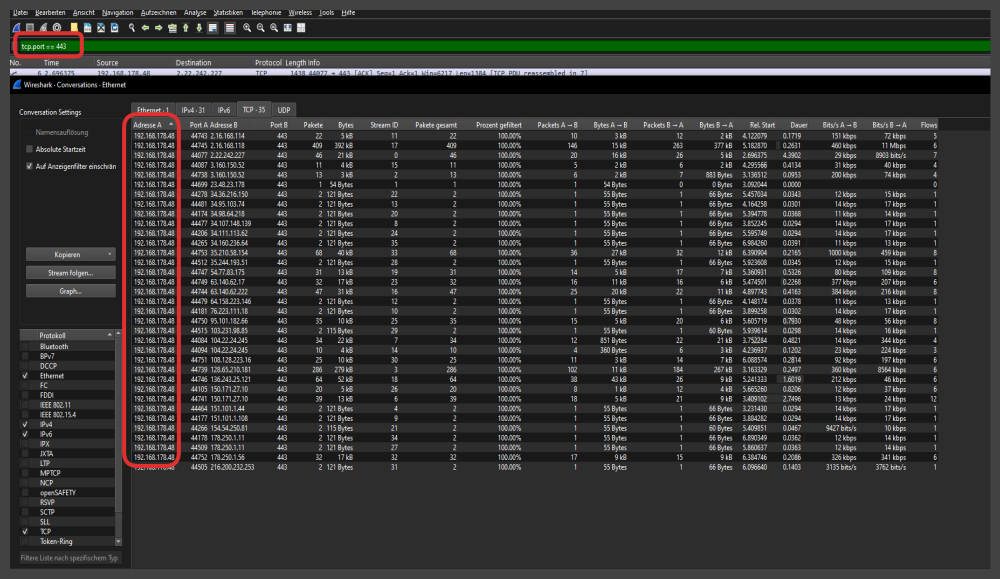
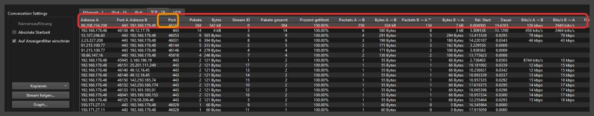
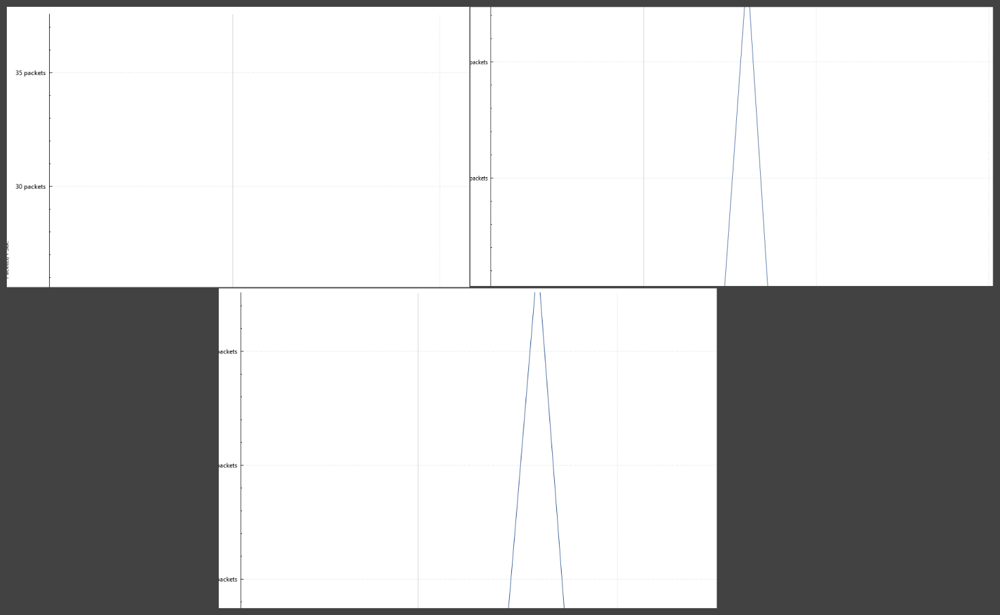
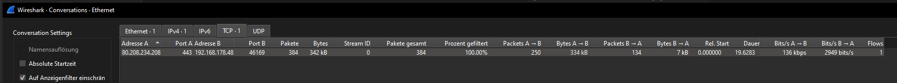
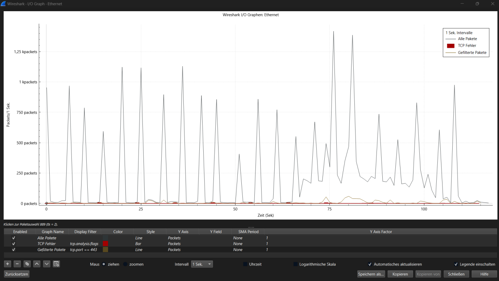

Wireshark Introduction
Einführung (Aufgabe3)¶
- 5 Erkannte Protokolle nennen
- UDP
- SSDP
- TCP
- ARP
- TLSv1.2
- QUIC
- ICMP 3.2
3.2 117,6 ms 3.3 Internet-Adresse: 192.168.101.21 Source MAC: 00:0C:29:8D:AD:E7 Ziel MAC: 00:50:56:C0:00:01 -> MAC Adresse von Router
Schichtenmodell ISO/OSI(Aufgabe 3.4)¶
Ein HTTP-Paket nutzt folgende Protokolle: - HTTP → Application Layer (Schicht 7) - TCP → Transport Layer (Schicht 4) - IP (IPv4 oder IPv6) → Network Layer (Schicht 3) - Ethernet → Link Layer (Schicht 2)

Analyse eines HTTP-Pakets: (Aufgabe 4)¶
Beispiel:

Filter in Wireshark (Aufgabe 5)¶
-
Wie lautet der Filter, mit dem Sie über den TCP-Port HTTPS-Verkehr filtern können?
- tcp.port == 443
-
Vergleiche HTTP-Verkehr über Filter:
httpund über Filter:tcp.port == 80- Filter
httpzeigt nur Pakete, bei denen der HTTP-Protokoll-Parser von Wireshark tatsächlich HTTP-Inhalte erkennt.
→ Z. B.GET,POST,HTTP/1.1 200 OKusw. - Filter
tcp.port == 80zeigt alle TCP-Pakete, die auf Port 80 laufen, auch wenn sie keine erkennbaren HTTP-Inhalte haben (z. B. Verbindungsaufbau mitSYN,ACK, Keep-Alive, etc.).
Der HTTP-Filter ist also protokollbasiert, währendtcp.port == 80rein portbasiert ist.
- Filter
-
Es gibt einen Filter
http, aber keinen Filterhttps. Haben Sie eine Idee warum?- HTTPS ist verschlüsselter HTTP-Verkehr über TLS
- Wird also verschlüsselt und somit nicht mehr lesbar und daher auch kein HTTPS-Filter
- ABER es gibt
tcp.port == 443
- HTTPS ist verschlüsselter HTTP-Verkehr über TLS
-
Welcher Filter bewirkt, dass nur Pakete angezeigt werden, die die eigene IP-Adresse als Zieladresse haben?
- ip.dst == EIGENE IP
Upstream vs Downstream (Aufgabe 6)¶
Statiskten -> Endpunkte -> IPv4
Filter für Downstream (vom Server an dich):¶
ip.dst == 192.168.178.48
Filter für Upstream (von dir ins Internet):¶
ip.src == 192.168.178.48

Wie viele IP's haben Daten an mein Rechner gesendet beim Aufruf¶
Statiskten -> Endpunkte -> IPv4
Wir haben unseren Filter eingestellt und schauen jetzt welche IP-Adressen Tx(Upstream) Pakete an uns gesendet haben. (Alle IP Adressen mit Tx Pakete > 0) = 29 IP's

Über wie viele TCP Sockets hat dein Rechner die Daten empfangen?¶
🧩 Ein TCP-Socket ist eindeutig identifiziert durch:
Quell-IP : Quell-Port→Ziel-IP : Ziel-Port
Das heißt: Kombination aus IP-Adressen und Ports in beide Richtungen.
- Dadurch, dass wir überall als Quelle unsere eigene IP haben, sind wir der Client
- Nun können wir die Anzahl der Sockets mit unserer eigenen IP zählen
- 34 Stück
Pakete bei Streams (Aufgabe 7)¶
ip.addr == <deine IP> && tcp.port == <Port des Streams>
Port des streams finden wir unter - Menü: "Statistiken" → "Gespräche" (Conversations) → TCP-Tab - Stream geht über Port B(Unserer lokaler Port in diesem Fall)

jetzt setzen wir:
ip.addr == 192.168.178.48 && tcp.port == 46169 ROT
ip.addr == 192.168.178.48 && tcp.port == 443 BLAU
und gehen in I/O Graph und bekommen: Rot sollte der Stream-Traffic sein und Blau die allgemeine Up und Downstreams für SSL Pakete

Jetzt sehen wir deutlich wie eine Überlagerung der beiden Filter stattfindet und dass wir in regelmäßigen abständen große Pakete empfangen und senden.
Alle 2sek ein peek mit 22 - 25 Packets
Unter: - Menü: "Statistiken" → "Gespräche" (Conversations) → TCP-Tab können wir noch Bandbreite analysieren

🔹 Download (empfangen):¶
- 334 kB = 334 × 1024 × 8 = 2.731.008 Bits
- Zeit: 19,6283 Sekunden
\(\(\frac{2.731.008 \text{ Bit}}{19,6283 \text{ Sek}} \approx \mathbf{139.2 \text{ kbps}}\)\)
🔹 Upload (gesendet):¶
- 7 kB = 7 × 1024 × 8 = 57.344 Bits
- Zeit: 19,6283 Sekunden
\(\(\frac{57.344 \text{ Bit}}{19,6283 \text{ Sek}} \approx \mathbf{2.9 \text{ kbps}}\)\)
Wenn man den Stream noch etwas länger laufen lässt, sieht es in etwa so aus:

Beim Aufzeichnen eines HTTPS-basierten Streams zeigte der Netzwerkverkehr typische Pufferungs-Muster. Der Client fordert regelmäßig größere Datenmengen an, was sich in deutlich sichtbaren Paket-Bursts äußert (über 1.000 Pakete/Sekunde), gefolgt von Pausen. Der Datenverkehr lief vollständig über TCP-Port 443 (HTTPS). Es wurden keine UDP-Streams verwendet. Die Übertragung war überwiegend stabil, mit nur wenigen TCP-Fehlern, die keine größere Störung darstellten. Insgesamt lässt sich eine regelmäßige Paketübertragung in der ersten Hälfte feststellen, mit zunehmender Unregelmäßigkeit in der zweiten Hälfte, was auf unterschiedliche Pufferanforderungen oder parallele Hintergrundaktivität hindeuten könnte.